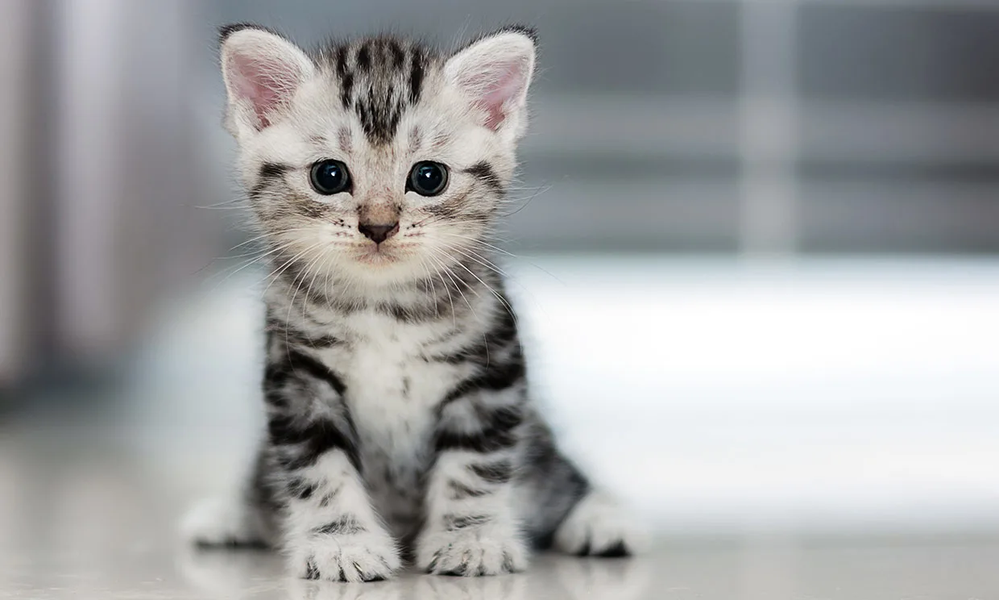
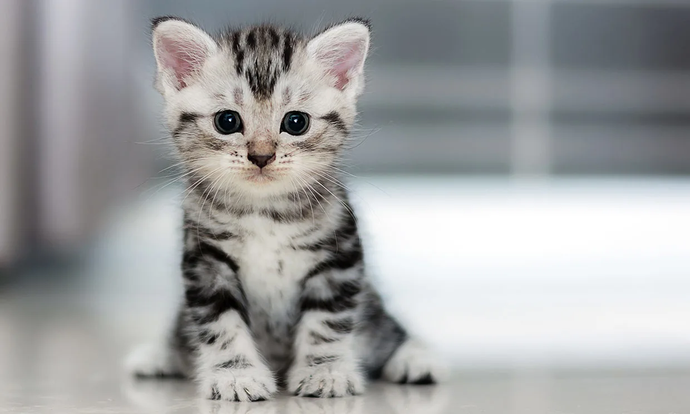

Hoy: Curiosidades sobre gatos
Los gatos son animales fascinantes con una gran cantidad de curiosidades interesantes asociadas a ellos. Desde su capacidad para dormir en cualquier lugar hasta su sentido del equilibrio, estos felinos tienen una serie de características únicas que los hacen uno de los animales más amados por los seres humanos.
Aquí te presento algunas curiosidades interesantes sobre los gatos:
- Los gatos pueden dormir hasta 16 horas al día: Los gatos tienen la reputación de ser animales perezosos y esto se debe en gran parte a su necesidad de dormir. Los gatos son capaces de dormir hasta 16 horas al día, lo que significa que pasan la mayor parte de su tiempo durmiendo.
- Los gatos tienen un sentido del equilibrio increíble: Los gatos son capaces de mantener su equilibrio en situaciones extremadamente difíciles. Pueden saltar de un objeto a otro sin problemas, incluso en superficies estrechas, y siempre aterrizan en sus patas.
- Los gatos pueden ver en la oscuridad: Los ojos de los gatos están adaptados para ver en la oscuridad. Tienen una gran cantidad de células receptoras de luz en la retina, lo que les permite ver objetos en condiciones de poca luz.
- Los gatos tienen una lengua áspera: La lengua de un gato está cubierta de pequeñas protuberancias llamadas papilas. Estas papilas le permiten al gato lamer su pelaje para mantenerse limpio y también pueden ser utilizadas para desgarrar la carne cuando cazan.
- Los gatos tienen un sentido del olfato muy agudo: Los gatos tienen un sentido del olfato mucho más agudo que los seres humanos. Pueden detectar olores que nosotros no podemos, lo que les permite encontrar comida y detectar posibles peligros.
- Los gatos pueden comunicarse de diferentes maneras: Los gatos tienen una serie de formas de comunicación, incluyendo maullidos, ronroneos, gruñidos y silbidos. También pueden comunicarse a través de señales corporales, como el movimiento de la cola y las orejas.
Estas son solo algunas de las curiosidades fascinantes sobre los gatos. No es de extrañar que estos animales sean tan populares en todo el mundo y hayan conquistado el corazón de muchas personas.

 
